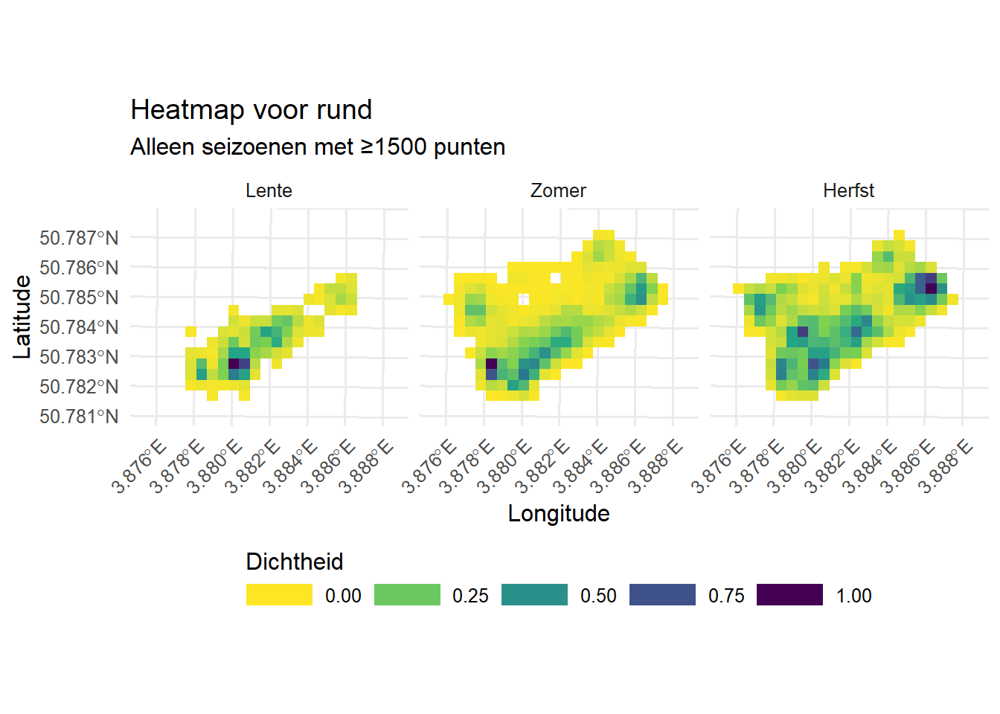
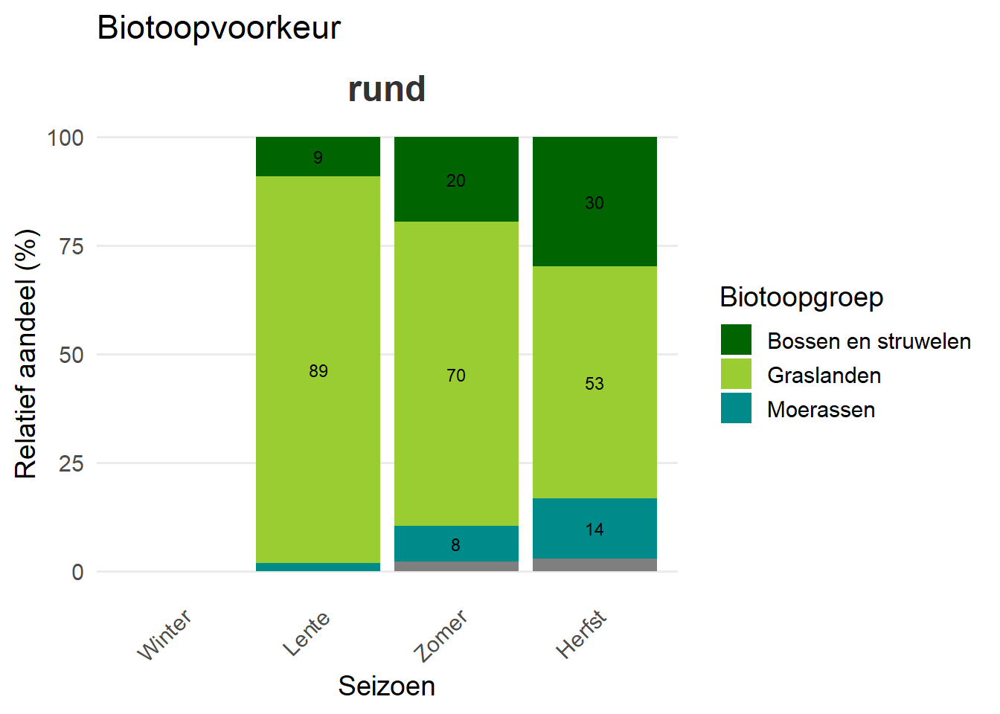
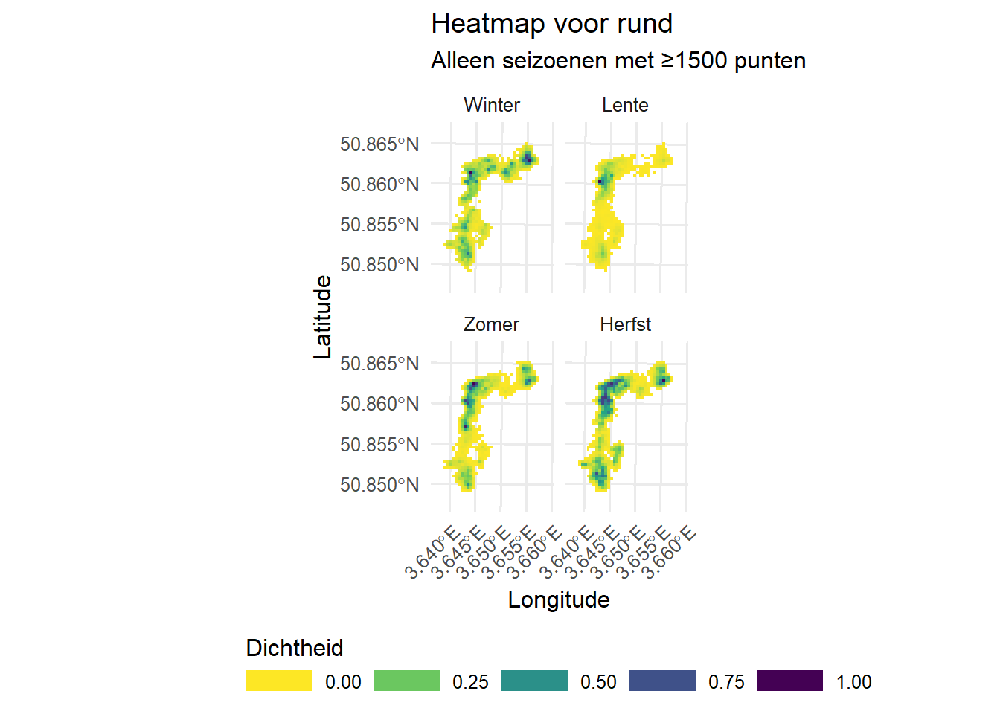
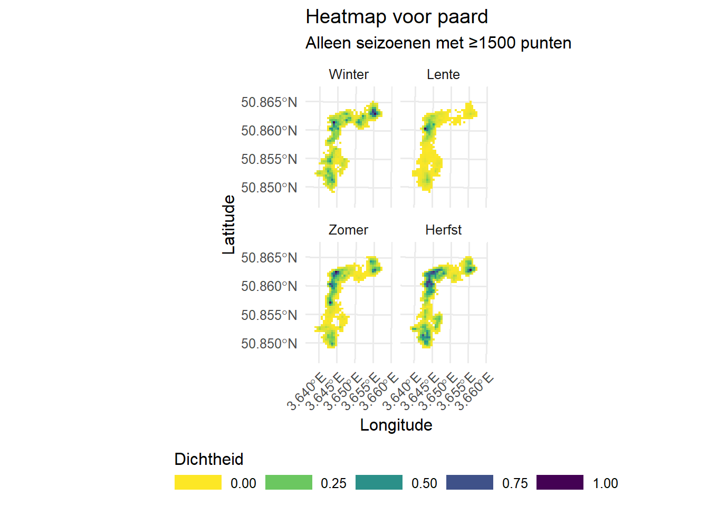
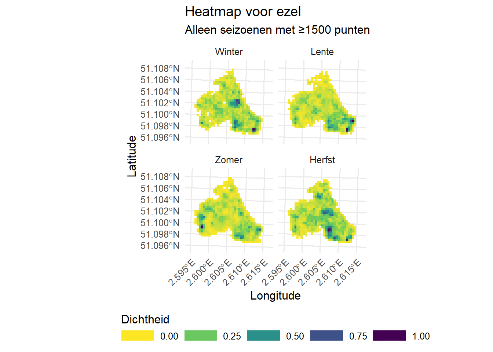
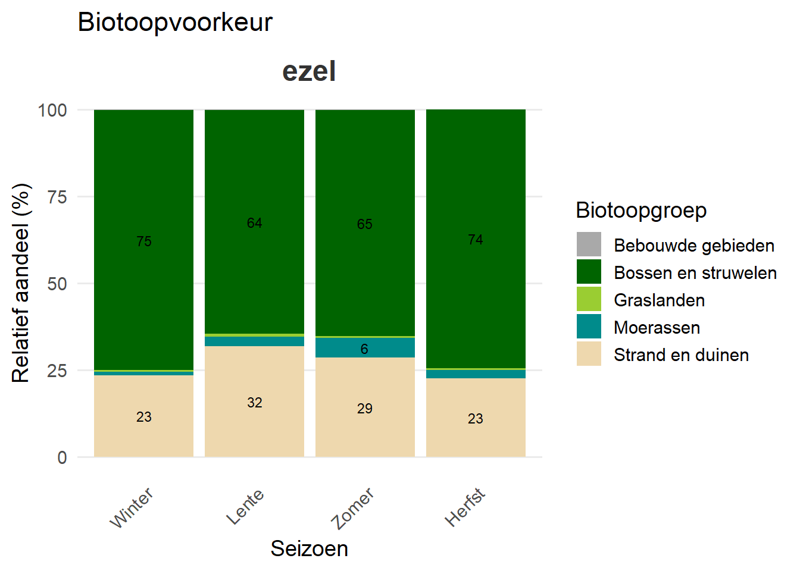
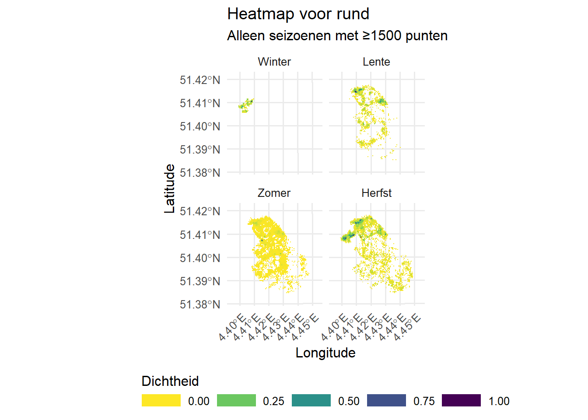
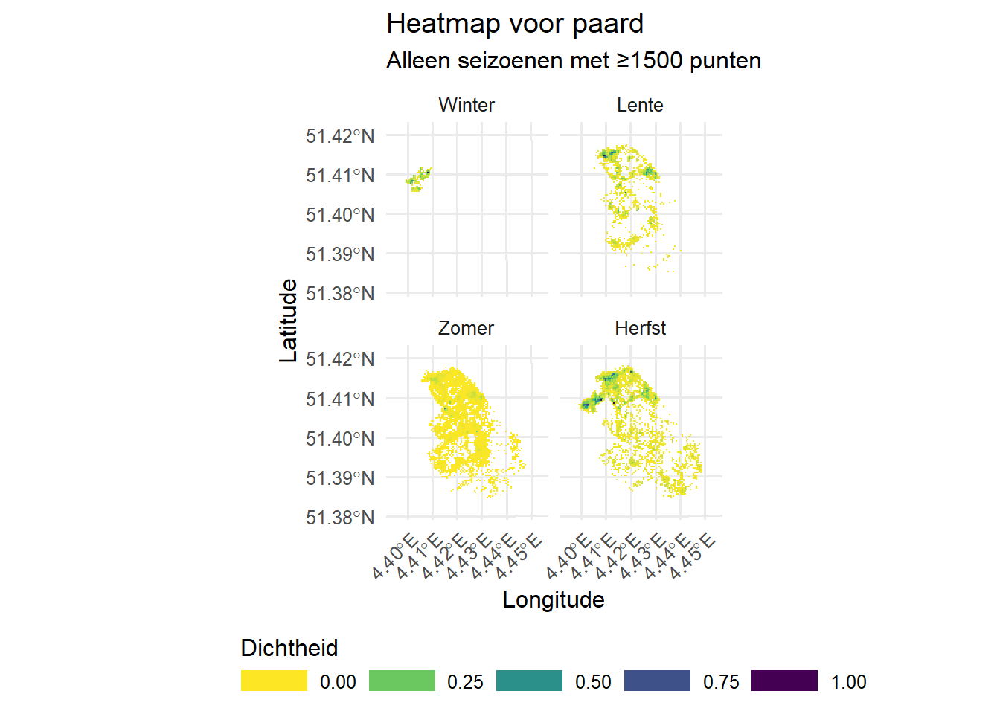
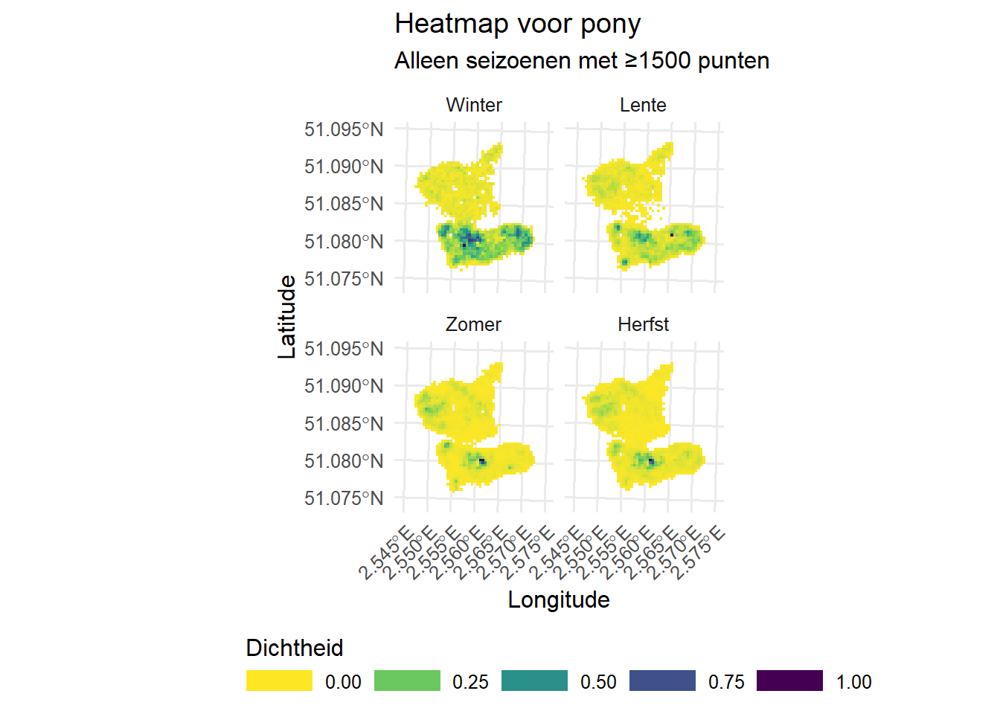
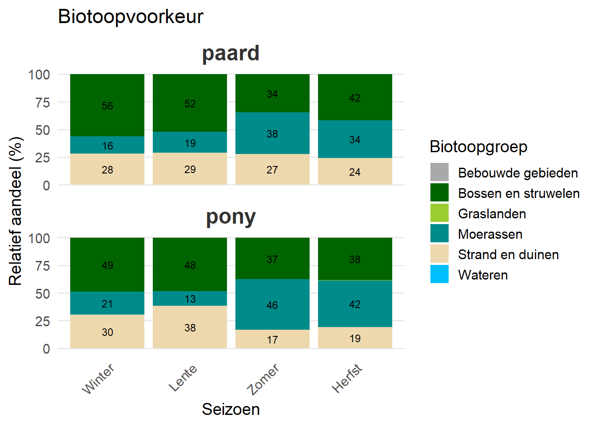

2 Resultaten
ONTWERP
In dit hoofdstuk tonen we de resultaten per gebied.
2.1 Boelaremeersen
test
2.1.1 Terreingebruik in Boelaremeersen
| Kudde_code | Gebied | Graasblok | Serienummer | Jaar | Diersoort | Ras | Graasperiode | Kuddegrootte | Ingezet | Data |
|---|---|---|---|---|---|---|---|---|---|---|
| BM_1 | Boelaremeersen | Boelaremeersen | AP503 | 2022 | rund | Belgisch Wit-Blauw | seizoens | 11 | 1 | 1 |
| BM_1 | Boelaremeersen | Boelaremeersen | AP504 | 2022 | rund | Belgisch Wit-Blauw | seizoens | 11 | 1 | 1 |
| BM_1 | Boelaremeersen | Boelaremeersen | AP503 | 2023 | rund | Belgisch Wit-Blauw | seizoens | 11 | 1 | 1 |
| BM_1 | Boelaremeersen | Boelaremeersen | AP504 | 2023 | rund | Belgisch Wit-Blauw | seizoens | 11 | 1 | 1 |
| BM_1 | Boelaremeersen | Boelaremeersen | AP503 | 2024 | rund | Belgisch Wit-Blauw | seizoens | 11 | 1 | 1 |
| BM_1 | Boelaremeersen | Boelaremeersen | AP504 | 2024 | rund | Belgisch Wit-Blauw | seizoens | 11 | 1 | 1 |
| BM_1 | Boelaremeersen | Boelaremeersen | AP504 | 2025 | rund | Belgisch Wit-Blauw | seizoens | 10 | 1 | Na |
| BM_1 | Boelaremeersen | Boelaremeersen | AP503 | 2025 | rund | Belgisch Wit-Blauw | seizoens | 10 | 1 | Na |

| year | Biotoopgroep | Diersoort | Winter | Lente | Zomer | Herfst | all_year |
|---|---|---|---|---|---|---|---|
| 2022 | Akkers en tuinbouw | rund | 0 | 0 | 2 | 3 | 5 |
| 2022 | Bossen en struwelen | rund | 0 | 70 | 1369 | 1407 | 2846 |
| 2022 | Graslanden | rund | 0 | 687 | 4911 | 2526 | 8124 |
| 2022 | Moerassen | rund | 0 | 14 | 573 | 656 | 1243 |
| 2022 | Ruigten en pioniersvegetaties | rund | 0 | 0 | 153 | 137 | 290 |

2.2 Bos t ename
test
2.2.1 Terreingebruik in Bos t ename
| Kudde_code | Gebied | Graasblok | Serienummer | Jaar | Diersoort | Ras | Graasperiode | Kuddegrootte | Ingezet | Data |
|---|---|---|---|---|---|---|---|---|---|---|
| EN_1 | Bos t Ename | Bos t Ename | AJ695 | 2020 | rund | Oost-Vlaams Witrood | jaarrond | 10 | 1 | 1 |
| EN_2 | Bos t Ename | Bos t Ename | Na | 2020 | paard | recreatiepaard | jaarrond | 2 | 0 | 0 |
| EN_3 | Bos t Ename | Bos t Ename | Na | 2020 | 1 ezel en 1 Fjord pony in perceel 3 | Na | jaarrond | 2 | 0 | 0 |
| EN_1 | Bos t Ename | Bos t Ename | AP514 | 2021 | rund | Oost-Vlaams Witrood | jaarrond | 10 | 1 | 1 |
| EN_2 | Bos t Ename | Bos t Ename | AP520 | 2021 | paard | recreatiepaard | jaarrond | 2 | 1 | 1 |
| EN_1 | Bos t Ename | Bos t Ename | AP514 | 2022 | rund | Oost-Vlaams Witrood | jaarrond | 10 | 1 | 1 |
| EN_2 | Bos t Ename | Bos t Ename | AP520 | 2022 | paard | recreatiepaard | jaarrond | 2 | 1 | 1 |
| EN_2 | Bos t Ename | Bos t Ename | AP512 | 2022 | paard | recreatiepaard | jaarrond | 2 | 0 | 0 |
| EN_1 | Bos t Ename | Bos t Ename | AP514 | 2023 | rund | Oost-Vlaams Witrood | jaarrond | 10 | 1 | 1 |
| EN_2 | Bos t Ename | Bos t Ename | AP512 | 2023 | paard | recreatiepaard | jaarrond | 2 | 0 | 0 |
| EN_1 | Bos t Ename | Bos t Ename | AP514 | 2024 | rund | Oost-Vlaams Witrood | jaarrond | 10 | 1 | 1 |
| EN_2 | Bos t Ename | Bos t Ename | AP512 | 2024 | paard | recreatiepaard | jaarrond | 2 | 0 | 0 |
| EN_2 | Bos t Ename | Bos t Ename | H4UE3W | 2025 | paard | recreatiepaard | jaarrond | NULL | NULL | Na |
| EN_1 | Bos t Ename | Bos t Ename | 1LTM4C | 2025 | rund | Oost-Vlaams Witrood | jaarrond | NULL | NULL | Na |
| EN_2 | Bos t Ename | Bos t Ename | AP514 | 2025 | ? | Na | jaarrond | NULL | NULL | Na |
| EN_2 | Bos t Ename | Bos t Ename | AP512 | 2025 | paard | Na | jaarrond | NULL | NULL | Na |


| year | Biotoopgroep | Diersoort | Winter | Lente | Zomer | Herfst | all_year |
|---|---|---|---|---|---|---|---|
| 2020 | Akkers en tuinbouw | rund | 0 | 0 | 4 | 3 | 7 |
| 2020 | Bebouwde gebieden | rund | 5 | 0 | 16 | 33 | 54 |
| 2020 | Bossen en struwelen | rund | 26 | 0 | 477 | 900 | 1403 |
| 2020 | Graslanden | rund | 64 | 0 | 1330 | 2013 | 3407 |
| 2020 | Kleine landschapselementen | rund | 0 | 0 | 1 | 2 | 3 |
| 2020 | Ruigten en pioniersvegetaties | rund | 10 | 0 | 215 | 549 | 774 |
| 2020 | Wateren | rund | 0 | 0 | 3 | 2 | 5 |
| 2021 | Akkers en tuinbouw | rund | 0 | 1 | 1 | 4 | 6 |
| 2021 | Bebouwde gebieden | paard | 0 | 27 | 10 | 0 | 37 |
| 2021 | Bebouwde gebieden | rund | 5 | 602 | 25 | 60 | 692 |
| 2021 | Bossen en struwelen | paard | 0 | 75 | 15 | 0 | 90 |
| 2021 | Bossen en struwelen | rund | 162 | 206 | 554 | 824 | 1746 |
| 2021 | Graslanden | paard | 0 | 2734 | 577 | 0 | 3311 |
| 2021 | Graslanden | rund | 107 | 1465 | 2258 | 2072 | 5902 |
| 2021 | Kleine landschapselementen | rund | 0 | 0 | 0 | 3 | 3 |
| 2021 | Ruigten en pioniersvegetaties | paard | 0 | 898 | 39 | 0 | 937 |
| 2021 | Ruigten en pioniersvegetaties | rund | 89 | 143 | 493 | 601 | 1326 |
| 2021 | Wateren | rund | 0 | 0 | 6 | 4 | 10 |
| 2022 | Akkers en tuinbouw | rund | 4 | 4 | 6 | 1 | 15 |
| 2022 | Bebouwde gebieden | paard | 13 | 49 | 134 | 0 | 196 |
| 2022 | Bebouwde gebieden | rund | 62 | 33 | 42 | 8 | 145 |
| 2022 | Bossen en struwelen | paard | 187 | 92 | 988 | 10 | 1277 |
| 2022 | Bossen en struwelen | rund | 860 | 540 | 777 | 160 | 2337 |
| 2022 | Graslanden | paard | 642 | 3011 | 1900 | 215 | 5768 |
| 2022 | Graslanden | rund | 1253 | 2212 | 2002 | 907 | 6374 |
| 2022 | Kleine landschapselementen | rund | 1 | 1 | 3 | 0 | 5 |
| 2022 | Ruigten en pioniersvegetaties | paard | 265 | 627 | 366 | 12 | 1270 |
| 2022 | Ruigten en pioniersvegetaties | rund | 114 | 345 | 363 | 27 | 849 |
| 2022 | Wateren | paard | 0 | 1 | 1 | 0 | 2 |
| 2022 | Wateren | rund | 4 | 4 | 1 | 0 | 9 |
| 2023 | Akkers en tuinbouw | rund | 0 | 0 | 2 | 1 | 3 |
| 2023 | Bebouwde gebieden | rund | 25 | 36 | 4 | 16 | 81 |
| 2023 | Bossen en struwelen | rund | 306 | 276 | 133 | 135 | 850 |
| 2023 | Graslanden | rund | 732 | 1493 | 827 | 994 | 4046 |
| 2023 | Ruigten en pioniersvegetaties | rund | 9 | 196 | 25 | 18 | 248 |
| 2023 | Wateren | rund | 0 | 0 | 1 | 0 | 1 |
| 2024 | Akkers en tuinbouw | rund | 1 | 0 | 7 | 6 | 14 |
| 2024 | Bebouwde gebieden | rund | 15 | 50 | 44 | 24 | 133 |
| 2024 | Bossen en struwelen | rund | 596 | 330 | 467 | 396 | 1789 |
| 2024 | Graslanden | rund | 535 | 520 | 1986 | 2174 | 5215 |
| 2024 | Kleine landschapselementen | rund | 0 | 1 | 0 | 1 | 2 |
| 2024 | Ruigten en pioniersvegetaties | rund | 33 | 39 | 423 | 255 | 750 |
| 2024 | Wateren | rund | 0 | 0 | 1 | 3 | 4 |
 {#fig-biotope-bars-Bos t Ename width=100%}
{#fig-biotope-bars-Bos t Ename width=100%}
2.3 Demerbroeken
test
2.3.1 Terreingebruik in Demerbroeken
2.4 Hochter bampd
test
2.4.1 Terreingebruik in Hochter bampd
2.5 Hoge kempen
test
2.5.1 Terreingebruik in Hoge kempen
2.6 Houtsaegerduinen
De Houtsaegerduinen (90 ha, beheerd door ANB) zijn grotendeels gefixeerd en sterk verstruweeld. Sedert 1997 graast er jaarrond een kudde ezels (Cotentin Flamande) binnen een blok van 74 ha. Aanvankelijk werden 6 ezels geïntroduceerd. In 2020 graasden er 10 dieren en in de periode 2021 - 2023 groeide dit aan tot 25 dieren. Deze kudde geraakte jaarlijks gesplitst en omdat we de kudde maar met één tracker volgen, is het beeld dat we schetsen van het terreingebruik mogelijks onvolledig. Aanvankelijke doelstelling was het open maken van het struweel en uitbreiden van de verspreide duingraslandfragmenten. De ezelbegrazing blijkt daartoe onvoldoende. In 2018 werden daarom twee blokken met een gezamenlijke oppervlakte van 4,4 ha volledig machinaal ontstruweeld. Het nabeheer gebeurt door intensieve schapen- en geitenbegrazing binnen verplaatsbare flexi-netten. In 2024 betrof het 186 dieren: 23 geiten en 150 schapen. Aanvullend grazen deze dieren ook geherderd in andere zones van het gebied. De geherderde kudde tracken we niet, waardoor we de totale graasdruk niet kunnen inschatten.
2.6.1 Terreingebruik in Houtsaegerduinen

| Kudde_code | Gebied | Graasblok | Serienummer | Jaar | Diersoort | Ras | Graasperiode | Kuddegrootte | Ingezet | Data |
|---|---|---|---|---|---|---|---|---|---|---|
| HS_1 | Houtsaegerduinen | Na | AN795 | 2020 | ezel | Cotentin Flamande | jaarrond | 10 | 0 | 0 |
| HS_1 | Houtsaegerduinen | Na | AN795 | 2021 | ezel | Cotentin Flamande | jaarrond | 10 | 1 | 1 |
| HS_1 | Houtsaegerduinen | Na | AN795 | 2022 | ezel | Cotentin Flamande | jaarrond | 25 | 1 | 1 |
| HS_1 | Houtsaegerduinen | Na | AN795 | 2023 | ezel | Cotentin Flamande | jaarrond | 25 | 1 | 1 |
| HS_1 | Houtsaegerduinen | Na | AN795 | 2024 | ezel | Cotentin Flamande | jaarrond | 25 | 1 | 1 |
| HS_1 | Houtsaegerduinen | Na | AP513 | 2024 | ezel | Cotentin Flamande | jaarrond | 25 | 1 | 1 |
| HS_1 | Houtsaegerduinen | Na | DH970 | 2025 | ezel | Cotentin Flamande | jaarrond | 25 | 1 | Na |

| year | Biotoopgroep | Diersoort | Winter | Lente | Zomer | Herfst | all_year |
|---|---|---|---|---|---|---|---|
| 2021 | Bebouwde gebieden | ezel | 0 | 1 | 9 | 1 | 11 |
| 2021 | Bossen en struwelen | ezel | 6 | 646 | 2656 | 2337 | 5645 |
| 2021 | Graslanden | ezel | 0 | 15 | 17 | 8 | 40 |
| 2021 | Moerassen | ezel | 0 | 22 | 193 | 102 | 317 |
| 2021 | Strand en duinen | ezel | 0 | 307 | 1270 | 748 | 2325 |
| 2022 | Bebouwde gebieden | ezel | 8 | 12 | 9 | 5 | 34 |
| 2022 | Bossen en struwelen | ezel | 2494 | 2591 | 2583 | 3015 | 10683 |
| 2022 | Graslanden | ezel | 16 | 31 | 20 | 41 | 108 |
| 2022 | Moerassen | ezel | 45 | 187 | 370 | 90 | 692 |
| 2022 | Strand en duinen | ezel | 682 | 1360 | 1147 | 936 | 4125 |
| 2023 | Bebouwde gebieden | ezel | 4 | 5 | 7 | 1 | 17 |
| 2023 | Bossen en struwelen | ezel | 1771 | 2746 | 2506 | 990 | 8013 |
| 2023 | Graslanden | ezel | 8 | 18 | 11 | 2 | 39 |
| 2023 | Moerassen | ezel | 16 | 49 | 116 | 14 | 195 |
| 2023 | Strand en duinen | ezel | 619 | 1284 | 1003 | 232 | 3138 |
| 2024 | Bebouwde gebieden | ezel | 2 | 0 | 8 | 0 | 10 |
| 2024 | Bossen en struwelen | ezel | 311 | 69 | 2584 | 5 | 2969 |
| 2024 | Graslanden | ezel | 3 | 1 | 14 | 0 | 18 |
| 2024 | Moerassen | ezel | 5 | 1 | 239 | 1 | 246 |
| 2024 | Strand en duinen | ezel | 135 | 42 | 1101 | 9 | 1287 |

2.7 Kalmthoutse heide
test
2.7.1 Terreingebruik in Kalmthoutse heide
| Kudde_code | Gebied | Graasblok | Serienummer | Jaar | Diersoort | Ras | Graasperiode | Kuddegrootte | Ingezet | Data |
|---|---|---|---|---|---|---|---|---|---|---|
| Na | Kalmthoutse Heide | Na | AK725 | 2020 | schaap | Kempisch | seizoensbegrazing | 350 | 0 | Na |
| Na | Kalmthoutse Heide | Na | AJ730 | 2020 | schaap | Kempisch | geherderd | 350 | 0 | Na |
| KH_1 | Kalmthoutse Heide | Centraal | AL130 | 2020 | paard | IJslandse paarden | seizoensbegrazing | 8 | NULL | Na |
| KH_2 | Kalmthoutse Heide | Noord | AK723 | 2020 | rund | Galloway | seizoensbegrazing | 60 | NULL | Na |
| KH_2 | Kalmthoutse Heide | Zuid | AK722 | 2020 | rund | Galloway | seizoensbegrazing | 60 | NULL | Na |
| KH_3 | Kalmthoutse Heide | Noord | AP518 | 2021 | rund | Galloway | seizoensbegrazing | 36 | 1 | 1 |
| KH_3 | Kalmthoutse Heide | Noord | AP519 | 2021 | rund | Galloway | seizoensbegrazing | 36 | 1 | 1 |
| KH_3 | Kalmthoutse Heide | Noord | AP521 | 2021 | rund | Galloway | seizoensbegrazing | 36 | 1 | 1 |
| KH_3 | Kalmthoutse Heide | Noord | AP522 | 2021 | rund | Galloway | seizoensbegrazing | 36 | 1 | 1 |
| KH_3 | Kalmthoutse Heide | Noord | AP518 | 2022 | rund | Galloway | seizoensbegrazing | 36 | 1 | 1 |
| KH_3 | Kalmthoutse Heide | Noord | AP519 | 2022 | rund | Galloway | seizoensbegrazing | 36 | 1 | 1 |
| KH_3 | Kalmthoutse Heide | Noord | AP521 | 2022 | rund | Galloway | seizoensbegrazing | 36 | 0 | 0 |
| KH_3 | Kalmthoutse Heide | Noord | AP522 | 2022 | rund | Galloway | seizoensbegrazing | 36 | 1 | 1 |
| KH_3 | Kalmthoutse Heide | Noord | 4AE2FC | 2022 | rund | Galloway | seizoensbegrazing | 36 | 0 | 0 |
| KH_3 | Kalmthoutse Heide | Noord | N7FRZ1 | 2022 | rund | Galloway | seizoensbegrazing | 36 | 0 | 0 |
| KH_3 | Kalmthoutse Heide | Noord | HK1VEL | 2022 | rund | Galloway | seizoensbegrazing | 36 | 1 | 1 |
| KH_3 | Kalmthoutse Heide | Noord | AP518 | 2023 | rund | Galloway | seizoensbegrazing | 36 | 1 | 1 |
| KH_3 | Kalmthoutse Heide | Noord | AP519 | 2023 | rund | Galloway | seizoensbegrazing | 36 | 1 | 1 |
| KH_3 | Kalmthoutse Heide | Noord | AP522 | 2023 | rund | Galloway | seizoensbegrazing | 36 | 1 | 1 |
| KH_3 | Kalmthoutse Heide | Noord | AP518 | 2024 | rund | Galloway | seizoensbegrazing | 36 | 1 | 1 |
| KH_3 | Kalmthoutse Heide | Noord | AP519 | 2024 | rund | Galloway | seizoensbegrazing | 36 | 1 | 1 |
| KH_3 | Kalmthoutse Heide | Noord | AP522 | 2024 | rund | Galloway | seizoensbegrazing | 36 | 1 | 1 |
| KH_3 | Kalmthoutse Heide | Noord | 1PGXU7 | 2024 | rund | Galloway | seizoensbegrazing | 36 | 1 | 1 |
| KH_3 | Kalmthoutse Heide | Noord | KEFCU6 | 2024 | rund | Galloway | seizoensbegrazing | 36 | 1 | 1 |
| KH_3 | Kalmthoutse Heide | Noord | 16GJNN | 2024 | rund | Galloway | seizoensbegrazing | 36 | 1 | 1 |
| Na | Kalmthoutse Heide | Na | DO707 | 2025 | schaap | Kempisch | seizoensbegrazing | NULL | NULL | Na |
| Na | Kalmthoutse Heide | Na | DO708 | 2025 | schaap | Kempisch | seizoensbegrazing | NULL | NULL | Na |
| Na | Kalmthoutse Heide | Noord | DO703 | 2025 | rund | Galloway | seizoensbegrazing | 39 | NULL | Na |
| Na | Kalmthoutse Heide | Noord | DO704 | 2025 | rund | Galloway | seizoensbegrazing | 39 | NULL | Na |
| Na | Kalmthoutse Heide | Zuid | DO705 | 2025 | rund | Galloway | seizoensbegrazing | 15 | NULL | Na |
| Na | Kalmthoutse Heide | Zuid | DO706 | 2025 | rund | Galloway | seizoensbegrazing | 15 | NULL | Na |


| year | Biotoopgroep | Diersoort | Winter | Lente | Zomer | Herfst | all_year |
|---|---|---|---|---|---|---|---|
| 2020 | Bebouwde gebieden | paard | 0 | 0 | 0 | 1 | 1 |
| 2020 | Bebouwde gebieden | rund | 0 | 0 | 2 | 1 | 3 |
| 2020 | Bossen en struwelen | paard | 0 | 0 | 28 | 62 | 90 |
| 2020 | Bossen en struwelen | rund | 0 | 103 | 593 | 240 | 936 |
| 2020 | Graslanden | paard | 0 | 0 | 58 | 72 | 130 |
| 2020 | Graslanden | rund | 0 | 20 | 89 | 21 | 130 |
| 2020 | Heiden | paard | 0 | 0 | 4515 | 830 | 5345 |
| 2020 | Heiden | rund | 0 | 614 | 3337 | 1391 | 5342 |
| 2020 | Moerassen | rund | 0 | 0 | 0 | 2 | 2 |
| 2020 | Wateren | paard | 0 | 0 | 59 | 20 | 79 |
| 2020 | Wateren | rund | 0 | 38 | 100 | 28 | 166 |
| 2021 | Akkers en tuinbouw | rund | 0 | 0 | 1 | 11 | 12 |
| 2021 | Bebouwde gebieden | rund | 0 | 1 | 11 | 5 | 17 |
| 2021 | Bossen en struwelen | rund | 0 | 45 | 418 | 704 | 1167 |
| 2021 | Graslanden | rund | 0 | 20 | 337 | 2134 | 2491 |
| 2021 | Heiden | rund | 0 | 261 | 7092 | 2755 | 10108 |
| 2021 | Moerassen | rund | 0 | 1 | 2 | 48 | 51 |
| 2021 | Wateren | rund | 0 | 2 | 188 | 91 | 281 |
| 2022 | Akkers en tuinbouw | rund | 4 | 0 | 8 | 0 | 12 |
| 2022 | Bebouwde gebieden | rund | 0 | 2 | 4 | 4 | 10 |
| 2022 | Bossen en struwelen | rund | 71 | 164 | 253 | 191 | 679 |
| 2022 | Graslanden | rund | 320 | 91 | 180 | 107 | 698 |
| 2022 | Heiden | rund | 45 | 844 | 2432 | 1297 | 4618 |
| 2022 | Moerassen | rund | 2 | 0 | 0 | 1 | 3 |
| 2022 | Ruigten en pioniersvegetaties | rund | 0 | 0 | 0 | 1 | 1 |
| 2022 | Wateren | rund | 0 | 8 | 153 | 55 | 216 |
| 2024 | Akkers en tuinbouw | rund | 0 | 4 | 2 | 0 | 6 |
| 2024 | Bebouwde gebieden | rund | 0 | 1 | 0 | 0 | 1 |
| 2024 | Bossen en struwelen | rund | 0 | 180 | 364 | 15 | 559 |
| 2024 | Graslanden | rund | 0 | 81 | 68 | 2 | 151 |
| 2024 | Heiden | rund | 0 | 1553 | 2732 | 162 | 4447 |
| 2024 | Moerassen | rund | 0 | 0 | 1 | 0 | 1 |
| 2024 | Wateren | rund | 0 | 5 | 10 | 2 | 17 |
 {#fig-biotope-bars-Kalmthoutse Heide width=100%}
{#fig-biotope-bars-Kalmthoutse Heide width=100%}
2.8 Maldegemveld
test
2.8.1 Terreingebruik in Maldegemveld
2.9 Moenebroek
test
2.9.1 Terreingebruik in Moenebroek
2.10 Negenoord kerkeweerd
test
2.10.1 Terreingebruik in Negenoord kerkeweerd
2.11 Westhoek
De Westhoek (340 ha, beheerd door ANB) bestaat uit een complex van duinstruweel en -bos, droge duingraslanden, vochtige duinvalleien en stuivende duinen die in mozaïek voorkomen en samen zijn ingerasterd. Tijdens de tweede helft van de 20ste eeuw is het struweel sterk uitgebreid ten koste van de open duinhabitats. Stopzetting van het historisch gebruik als graasgebied is hiervan een belangrijke oorzaak. De voorbije decennia treedt ook een sterke fixatie op van stuivende duinen. De begrazing werd opgestart vanaf 1997 en heeft vandaag een noordelijk, een zuidelijk blok en oostelijk blok. Er worden zowel Konikpaarden, Schotse hooglandrunderen als Shetland pony’s ingeschaard en tijdelijk werd er ook begraasd door ezels.
Initiële doelstelling van de begrazing was het aanpakken van vergrassing (vooral met duinriet), verruiging en verstruweling. Het overkoepelende beheer van bos, struweel, grasland en open duin richt zich op het behoud van biodiversiteit, herstel van verstuiving en ondersteuning van doelsoorten. Het begrazingsproject heeft als voornaamste doel het behoud en herstel van duinnatuur door gecontroleerde begrazing. Zo’n 50 ha truweel en bos werden, in verschillende fasen, ook machinaal verwijderd. Hiermee ontwikkelt zich in het gebied een zeer rijke vegetatiestructuur gaande van kaal zand tot bos. De grazers spelen hierin een cruciale rol. Toch blijken ze niet in staat om de verstruweling tegen te houden en blijft aanvullend machinaal beheer nodig om de kenmerkende open habitats in stand te houden.
In de Westhoek monitoren we het terreingebruik in twee begrazingsrasters: Westhoek Noord (81 ha) en Westhoek Zuid (54 ha) (zie figuur @). In het zuidelijke raster graasden in de periode 2021-2023 één kudde Shetland-pony’s van 4 dieren, één kudde Konik-paarden van 5 dieren en één kudde Schotse Hooglandrunderen van 6 dieren. In het noordelijk deel graasden in die periode twee kuddes Konik-paarden van 7 en 4 dieren. Westhoek Noord en Westhoek Zuid waren tot oktober 2023 enkel verbonden in de winterperiode. Vanaf dan werden de graasgebieden permanent verbonden. Tesamen begraasden 17 paarden, 4 Shetlandpony’s en 10 Schotse hooglandrunderen het ééngemaakte graasblok in 2024 en 2005. De deelkuddes paarden bleven bestaan.
Dit resulteert in een gemiddelde graasdruk van xx in WHN, xx in WHZ grootvee-eenheden per ha per jaar. Het gaat om circa xx graasdagen per hectare per jaar.
2.11.1 Terreingebruik in Westhoek

| Kudde_code | Gebied | Graasblok | Serienummer | Jaar | Diersoort | Ras | Graasperiode | Kuddegrootte | Ingezet | Data |
|---|---|---|---|---|---|---|---|---|---|---|
| WH_1 | Westhoek | zuid, noord + zuid | AN785 | 2021 | pony | Shetland | jaarrond | 5 | 1 | 1 |
| WH_3 | Westhoek | noord, noord + zuid | AN788 | 2021 | paard | Konik | jaarrond | 4 | 1 | 1 |
| WH_4 | Westhoek | zuid, noord + zuid | AN789 | 2021 | paard | Konik | jaarrond | 6 | 1 | 1 |
| WH_5 | Westhoek | noord, noord + zuid | AP513 | 2021 | paard | Konik | jaarrond | 7 | 1 | 1 |
| WH_2 | Westhoek | zuid, noord + zuid | G4FUGY | 2022 | rund | Schotse Hooglander | jaarrond | 6 | 1 | 0 |
| WH_2 | Westhoek | zuid, noord + zuid | HHZN2Y | 2022 | rund | Schotse Hooglander | jaarrond | 6 | 1 | 0 |
| WH_2 | Westhoek | zuid, noord + zuid | YTA4VD | 2022 | rund | Schotse Hooglander | jaarrond | 6 | 0 | 0 |
| WH_1 | Westhoek | zuid, noord + zuid | AN785 | 2022 | pony | Shetland | jaarrond | 5 | 1 | 1 |
| WH_3 | Westhoek | noord, noord + zuid | AN788 | 2022 | paard | Konik | jaarrond | 4 | 1 | 1 |
| WH_4 | Westhoek | zuid, noord + zuid | AN789 | 2022 | paard | Konik | jaarrond | 6 | 1 | 1 |
| WH_5 | Westhoek | noord, noord + zuid | AP513 | 2022 | paard | Konik | jaarrond | 7 | 1 | 1 |
| WH_2 | Westhoek | zuid, noord + zuid | G4FUGY | 2023 | rund | Schotse Hooglander | jaarrond | 6 | 0 | 0 |
| WH_2 | Westhoek | zuid, noord + zuid | Z9XTYG | 2023 | rund | Schotse Hooglander | jaarrond | 6 | 1 | 0 |
| WH_2 | Westhoek | zuid, noord + zuid | WFKXG7 | 2023 | rund | Schotse Hooglander | jaarrond | 6 | 1 | 0 |
| WH_2 | Westhoek | zuid, noord + zuid | YTA4VD | 2023 | rund | Schotse Hooglander | jaarrond | 6 | 1 | 0 |
| WH_1 | Westhoek | zuid, noord + zuid | AN785 | 2023 | pony | Shetland | jaarrond | 4 | 1 | 1 |
| WH_3 | Westhoek | noord, noord + zuid | AN788 | 2023 | paard | Konik | jaarrond | 4 | 1 | 1 |
| WH_4 | Westhoek | zuid, noord + zuid | AN789 | 2023 | paard | Konik | jaarrond | 5 | 1 | 1 |
| WH_5 | Westhoek | noord, noord + zuid | AP513 | 2023 | paard | Konik | jaarrond | 7 | 0 | 0 |
| WH_2 | Westhoek | noord + zuid | A7NVDV 1100 | 2024 | rund | Schotse Hooglander | jaarrond | 10 | 1 | 0 |
| WH_2 | Westhoek | noord + zuid | 7GDYFX 1100 | 2024 | rund | Schotse Hooglander | jaarrond | 10 | 1 | 0 |
| WH_2 | Westhoek | noord + zuid | YTA4VD 1010 | 2024 | rund | Schotse Hooglander | jaarrond | 10 | 1 | 0 |
| WH_1 | Westhoek | noord + zuid | AN785 | 2024 | pony | Shetland | jaarrond | 4 | 1 | 1 |
| WH_3 | Westhoek | noord + zuid | AN788 | 2024 | paard | Konik | jaarrond | 4 | 1 | 1 |
| WH_4 | Westhoek | noord + zuid | AN789 | 2024 | paard | Konik | jaarrond | 6 | 1 | 1 |
| WH_5 | Westhoek | noord + zuid | AP513 | 2024 | paard | Konik | jaarrond | 7 | 0 | 0 |
| WH_2 | Westhoek | noord + zuid | R7JTEF | 2025 | rund | Schotse Hooglander | jaarrond | 10 | 1 | 0 |
| WH_2 | Westhoek | noord + zuid | P16P9G | 2025 | rund | zeboe | jaarrond | 1 | 0 | Na |
| WH_6 | Westhoek | oost | RDKJCT | 2025 | rund | Schotse Hooglander | jaarrond | 15 | 1 | Na |
| WH_4 | Westhoek | noord + zuid | DH973 | 2025 | paard | Konik | jaarrond | 6 | 1 | Na |
| WH_3 | Westhoek | noord + zuid | DH974 | 2025 | paard | Konik | jaarrond | 4 | 1 | Na |
| WH_1 | Westhoek | noord + zuid | DH972 | 2025 | pony | Shetland | jaarrond | 4 | 1 | Na |
| WH_4 | Westhoek | noord + zuid | Na | 2025 | paard | Konik | jaarrond | ? | 0 | Na |
| WH_5 | Westhoek | noord + zuid | Na | Na | Na | Na | Na | NULL | NULL | Na |

| year | Biotoopgroep | Diersoort | Winter | Lente | Zomer | Herfst | all_year |
|---|---|---|---|---|---|---|---|
| 2021 | Bebouwde gebieden | paard | 0 | 0 | 2 | 2 | 4 |
| 2021 | Bebouwde gebieden | pony | 0 | 0 | 6 | 3 | 9 |
| 2021 | Bossen en struwelen | paard | 23 | 52 | 2609 | 2882 | 5566 |
| 2021 | Bossen en struwelen | pony | 0 | 163 | 11 | 1139 | 1313 |
| 2021 | Graslanden | paard | 0 | 3 | 7 | 0 | 10 |
| 2021 | Graslanden | pony | 0 | 0 | 0 | 2 | 2 |
| 2021 | Moerassen | paard | 30 | 77 | 3734 | 3187 | 7028 |
| 2021 | Moerassen | pony | 0 | 0 | 0 | 576 | 576 |
| 2021 | Strand en duinen | paard | 48 | 40 | 2248 | 2031 | 4367 |
| 2021 | Strand en duinen | pony | 0 | 232 | 39 | 541 | 812 |
| 2021 | Wateren | paard | 1 | 1 | 18 | 13 | 33 |
| 2021 | Wateren | pony | 0 | 0 | 0 | 2 | 2 |
| 2022 | Bebouwde gebieden | paard | 1 | 0 | 2 | 3 | 6 |
| 2022 | Bebouwde gebieden | pony | 3 | 0 | 0 | 1 | 4 |
| 2022 | Bossen en struwelen | paard | 1548 | 205 | 4149 | 4865 | 10767 |
| 2022 | Bossen en struwelen | pony | 779 | 2 | 0 | 739 | 1520 |
| 2022 | Graslanden | paard | 2 | 2 | 13 | 22 | 39 |
| 2022 | Moerassen | paard | 615 | 133 | 4318 | 3194 | 8260 |
| 2022 | Moerassen | pony | 279 | 0 | 0 | 448 | 727 |
| 2022 | Strand en duinen | paard | 725 | 114 | 3365 | 2368 | 6572 |
| 2022 | Strand en duinen | pony | 394 | 0 | 0 | 394 | 788 |
| 2022 | Wateren | paard | 2 | 1 | 24 | 8 | 35 |
| 2022 | Wateren | pony | 1 | 0 | 0 | 0 | 1 |
| 2023 | Bebouwde gebieden | paard | 5 | 5 | 3 | 1 | 14 |
| 2023 | Bebouwde gebieden | pony | 1 | 0 | 0 | 0 | 1 |
| 2023 | Bossen en struwelen | paard | 3318 | 4401 | 3040 | 2312 | 13071 |
| 2023 | Bossen en struwelen | pony | 986 | 21 | 637 | 392 | 2036 |
| 2023 | Graslanden | paard | 4 | 22 | 13 | 6 | 45 |
| 2023 | Moerassen | paard | 855 | 1834 | 3096 | 1586 | 7371 |
| 2023 | Moerassen | pony | 472 | 19 | 2586 | 1853 | 4930 |
| 2023 | Strand en duinen | paard | 1508 | 2153 | 2183 | 1196 | 7040 |
| 2023 | Strand en duinen | pony | 704 | 30 | 7 | 14 | 755 |
| 2023 | Wateren | paard | 4 | 5 | 15 | 13 | 37 |
| 2024 | Bebouwde gebieden | paard | 2 | 10 | 2 | 2 | 16 |
| 2024 | Bebouwde gebieden | pony | 0 | 4 | 7 | 0 | 11 |
| 2024 | Bossen en struwelen | paard | 1536 | 2331 | 2927 | 2504 | 9298 |
| 2024 | Bossen en struwelen | pony | 0 | 1663 | 2073 | 1348 | 5084 |
| 2024 | Graslanden | paard | 0 | 0 | 12 | 4 | 16 |
| 2024 | Graslanden | pony | 0 | 1 | 0 | 4 | 5 |
| 2024 | Moerassen | paard | 320 | 476 | 2779 | 2280 | 5855 |
| 2024 | Moerassen | pony | 0 | 498 | 724 | 1100 | 2322 |
| 2024 | Strand en duinen | paard | 917 | 1560 | 2354 | 1657 | 6488 |
| 2024 | Strand en duinen | pony | 0 | 1210 | 1178 | 847 | 3235 |
| 2024 | Wateren | paard | 0 | 3 | 10 | 13 | 26 |
| 2024 | Wateren | pony | 0 | 0 | 1 | 2 | 3 |

2.12 Ziepbeekvallei
test
2.12.1 Terreingebruik in Ziepbeekvallei
2.13 Zwinduinen
De Zwinduinen (222 ha, beheerd door ANB) omvatten in het noorden een reliëfrijk duingebied en in het zuiden een voormalige zandige strandvlakte (de ‘Kleine Vlakte’) met overgang naar een zone met kleiige polder. Er zijn 4 verschillende begrazingsgebieden aanwezig: zwinduinen noord, de ‘Far West’, de ‘Kleine Vlakte’ en de zone rondom de broedeilanden (zone C) met een gezamenlijke oppervlakte van 120 ha. Er grazen Schotse Hooglandrunderen, Shetland pony’s, Konikpaarden, schapen en geiten.
Doelstelling van de begrazing is net zoals in de overige duingebieden het terugdringen van struweel en (gras)ruigte en het openhouden van ontstruweelde zones. Binnen de begraasde zone werd ongeveer 15 ha bos en struweel gekapt. Het beheer van de Kleine Vlakte werd in 2020 bijgesteld omdat werd vastgesteld dat de duingraslanden onvoldoende verschraalden onder begrazing. Sedertdien worden grote stukken bijkomend gemaaid (met nabegrazing).
2.13.1 Terreingebruik in Zwinduinen

2.14 Zwinschorren
test
2.14.1 Terreingebruik in Zwinschorren
Thoonen, M. !!! Missing flandersqmd.year !!! !!! Missing flandersqmd.doi !!!